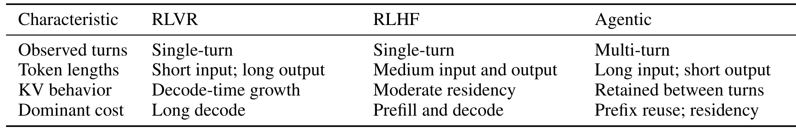
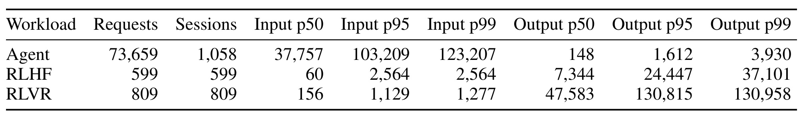
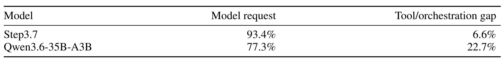
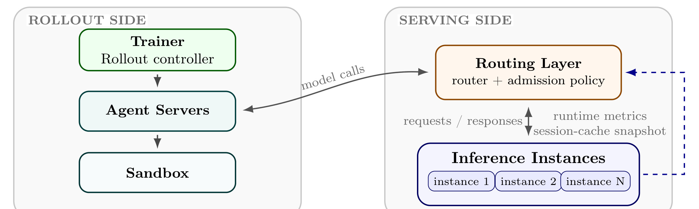
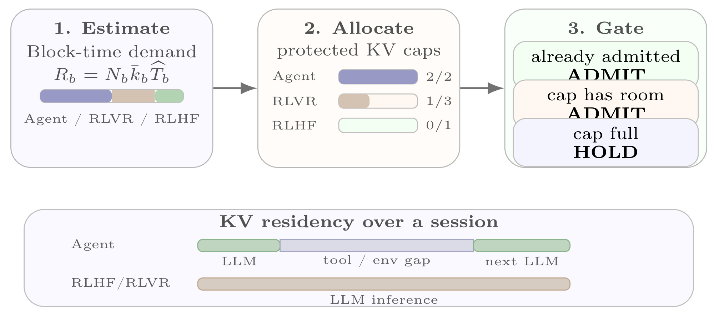
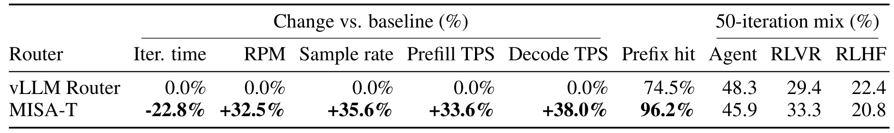
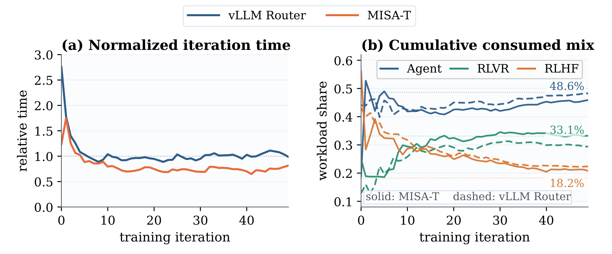
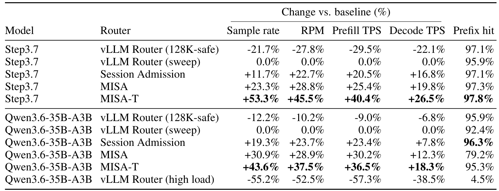
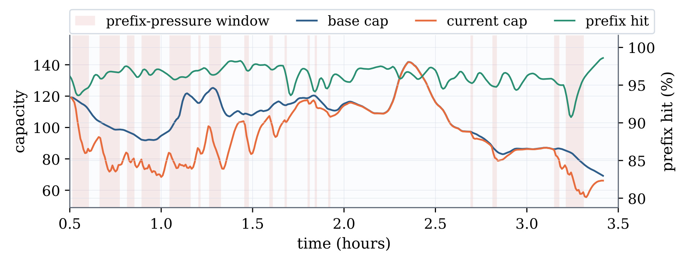
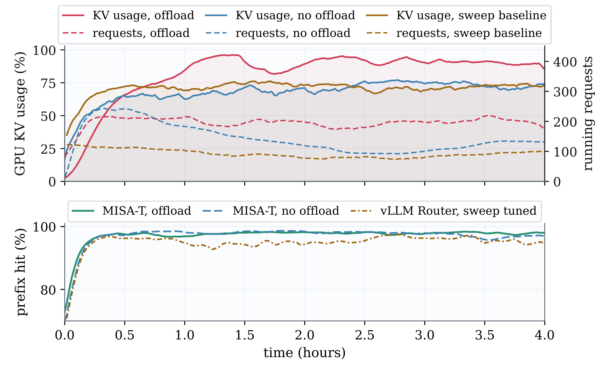

Scheduling Mixed RL Rollouts Beyond Prefix Locality / 超越前缀局部性的混合强化学习 Rollout 调度
Zetao Hong、Song Yuan、Yuanhao Ding、Yibo Zhu、Daxin Jiang、Zhibin Wang 与 Chen Tian 在这篇 2026 年 8 月 11 日提交的论文中提出 MISA-T（Mix-aware Session Admission with a Time factor）。第一作者主机构是南京大学新型软件技术国家重点实验室，合作机构包括 StepFun。论文关注的不是新的强化学习目标，而是 RLVR、RLHF 与 Agent rollout 共用异步推理池时，路由层如何管理有限 KV-cache。唯一论文入口为 arXiv:2608.11152；截至本次核验，未发现独立开源实现或官方项目页。
前缀感知路由能复用缓存，却不能控制异构 rollout 会话如何竞争有限 KV-cache：RLVR、RLHF 与 Agent 的序列结构和 KV 驻留时间不同，高并发下仅按最大前缀命中放置会诱发驱逐与冷 prefill；服务层还必须在不扭曲 trainer 目标任务混合的前提下分配容量。
1. 背景和问题
大模型强化学习后训练正在把 rollout generation 变成一项分布式 serving 工作。Trainer 释放 prompt 或 Agent task，rollout worker 把任务翻译为模型请求，router 再把请求放到能复用已有 KV 前缀的 inference instance。PagedAttention、RadixAttention 以及 Preble 一类工作已经说明：当请求共享 system prompt、会话历史或同一 prompt 的多次采样时，复用 prefix 可以省掉重复 prefill。问题在于，prefix-aware placement 回答的是“已决定执行的请求放到哪台机器”，而不是“此刻还应该让多少个新会话进入缓存工作集”。一个 instance 即使总是选择最大前缀命中，也可能同时容纳太多新 session，最终让它们彼此驱逐。
异构 rollout 会把这个缺口放大。RLVR 常见短输入、长推理输出，主要成本是持续 decode；RLHF 的输入输出更均衡；Agent trajectory 则跨多轮模型调用和工具执行，后续轮次依赖累积历史的长前缀。在 Agent 调用工具时，GPU 未必正在执行模型，但为了后续 continuation 不重新 prefill，KV 仍需要保留。因此，新 session 并不是一次普通请求，而是对未来 KV 增长、后续轮次和工具间隙的一项容量承诺。若只按当前 token 数或 session 数比较，这三类承诺会被错误地视作同质资源。

Table 1 把三类负载放进统一的 serving 视角。RLVR 与 RLHF 都是单轮，但前者是短输入、长输出和 decode-time KV 增长，后者是中等输入输出、适度驻留；Agent 则是长输入、短输出、多轮调用，KV 要跨 turn 保留，主导成本因此从单次 prefill/decode 变成 prefix reuse 与 residency。这个区分很重要：如果仅按每类并发 session 数均分容量，RLVR 的长输出可能持续扩张 KV，Agent 的长驻留又会长期占住 working set；如果只按瞬时 footprint 分配，工具等待期虽然不产生 token，却仍会把其他 session 挡在容量之外。论文明确说明这些 profile 来自其部署 trace，并非对所有 RLVR、RLHF 或 Agent workload 的定义。

Table 2 给出了异质性的量级。在 128K context limit 的在线混合 trace 中，Agent 有 73,659 个 request、1,058 个 session；input p50/p95/p99 分别达到 37,757、103,209、123,207，而 output p50 只有 148。RLVR 恰好相反：809 个请求对应 809 个会话，input p50 仅 156，但 output p50/p95/p99 达到 47,583、130,815、130,958。RLHF 的 599 个样本位于两者之间。这里不能把请求数多直接解释为资源成本大：Agent 的大量请求属于少数长会话的 continuation，局部性价值很高；RLVR 请求少，却带来极长 decode tail。调度器必须同时知道“还有多少未完成 session”“每个 session 约占多少 block”和“这些 block 要驻留多久”。

Table 3 进一步说明时间维度不可省。Step3.7 的 Agent 会话中，模型请求占 93.4%，tool/orchestration gap 占 6.6%；Qwen3.6-35B-A3B 则分别为 77.3% 与 22.7%。如果 controller 只测 model inference duration，后一模型会漏记近四分之一的 session 生命周期，而这段时间的 KV 仍可能服务下一轮。MISA-T 因此不把“调用工具”视为零成本空洞，而把从 admission 到完成、包含轮间工具执行的有效驻留时间纳入 block-time 需求。这个数据也提示外推边界：tool gap 依赖 Agent 环境、工具延迟和模型调用粒度，换一套 workload 后必须重新在线估计，不能固定复用 22.7% 之类的比例。
当并发上限过高时，placement-only 会形成正反馈：更多新 session 进入，resident KV working set 膨胀，可复用 continuation 被驱逐；后续轮次转成 cold prefill，prefill queue 变长、session overlap 增加，又触发更多驱逐。论文在 Qwen3.6 的高负载诊断中观察到 prefix hit 从 sweep-tuned 点的 92.4% 降至 4.5%，request throughput、effective prefill throughput 和 decode throughput也同时下降。这说明问题不是“GPU 还不够忙”，而是准入承诺超过可维护的局部性工作集。一个全局 session cap 可以先切断回路，但仍不知道受保护容量应如何在三类负载间分配；MISA-T 的核心任务正是补上全局准入、按类空间配额和驻留时间核算三层控制。
2. 方法
2.1 从前缀放置到会话承诺：问题如何形式化
论文先把职责划清：trainer 控制 policy staleness、外层 maximum concurrency 和目标 workload mixture $\rho$；router 不创建 rollout unit、不改 class label，只对每个请求返回某个 instance 或 HOLD。对于 Agent，多轮 trajectory 要在全部模型调用与工具交互完成后才算一个 trainer 可消费样本，所以 request RPM 不能替代 rollout throughput。MISA-T 的关键抽象是把 placement 与 admission 解耦：前者最小化一次请求的可见 prefill 成本，后者约束一个新 session 对未来 KV working set 的承诺。

Figure 1 中，左侧 trainer/rollout controller 决定任务释放，Agent server 与 sandbox 承担多轮交互；右侧 routing layer 只接收 requests/responses、runtime metrics 与 session-cache snapshot，再把请求送到 inference instances。图中没有让 MISA-T 修改模型执行、物理 KV allocator、reward 或 Agent sandbox，这决定了它可以作为独立 scheduler 或 gateway plugin 接入。工程上，这个边界也限制了控制精度：router 只能用延迟到达的 cache snapshot 和请求 metadata 推断 session 状态，不能提前知道最终序列长度、未来 turn 数或工具耗时；后续 cap 必须有 pending 账本和过载反馈来抵消观测滞后。对已准入请求，instance $w$ 的估计 prefill 成本写为：
符号解释：$L_r$ 是请求 prompt 长度，$H_{r,w}(t)$ 是 instance $w$ 上可复用的最长前缀，$d_w(t)$ 是 prefill backlog delay，$\mu_w(t)$ 是测得的 prefill throughput。第一项惩罚排队，第二项只为未命中 token 支付 prefill 时间，因此 placement 能在 locality 与 load 之间取舍；但公式没有约束同时存在多少 session，最大化 $H$ 并不会自动阻止 working set 过载。为此，论文用 KV block-time 表达一个 session 的空间—时间占用，并在 instance 层施加 protected budget：
符号解释：$k_s(t)$ 是 session 在时刻 $t$ 保留的 KV block，$\bar{k}_s$ 是保守参考 footprint，$T_s$ 是有效驻留时长；$P_w(t)$ 表示 instance 上受保护的 session 集，$\widetilde{k}_s$ 是 controller 预留估计，$C_w$ 是 protected KV budget。积分比最终 token 数更贴近资源机会成本；不过 $C_w$ 并非物理 cache 总量，而是为 locality 保护出的控制预算，实际 block 分配与 offload 仍由 serving engine 负责。与该容量约束配套，优化目标也以完成 rollout sample 而非请求为单位：
符号解释：$N_b^\pi(T)$ 是策略 $\pi$ 在 $T$ 前交付给 trainer 的 class-$b$ 完整样本，$A_b(T)$ 是 trainer 释放数，$Q_b=A_b-N_b$ 是 backlog。约束要求可行 offered load 下任一 class 的拖欠都不能与总释放量同阶增长；若 release mixture 收敛到 $\rho$，完成 mixture 才不会被服务层长期改写。它是设计目标而非论文给出的严格在线最优性证明，MISA-T 用 backlog-dependent quota 近似它。
2.2 自适应会话准入：先止住 KV 驱逐正反馈
对于 instance $w$，controller 维护已在 snapshot 中出现的 protected session 集 $O_w$，以及已经准入、但尚未被下一次 snapshot 看见的 pending 集 $P_w$。Continuation 只要 session identity 在两者之一，就继续保护 locality；新 session 则必须同时满足 operational cap 的 headroom：
符号解释：$s_r$ 是请求的 session identity，$K_w(t)$ 是当前 protected session cap。Pending 不是多余状态：snapshot 异步上报时，若刚准入的 session 尚未可见，缺少 $P_w$ 会让 router 在一个采样周期内重复认为还有空位。被拒的新 session 进入 HOLD 并周期重评，held/candidate 仍留在需求 ledger 中；所以 delay 不会把其需求“隐身”，也不会让已准入 continuation 被新会话反复抢占。HOLD 也不意味着无条件等待命中 instance；对于需要重新获取 admission 的 continuation，等待比立即 cold route 更划算的条件是：
符号解释：$\Delta_r$ 是额外 hold delay，$q_{hit}$ 与 $q_{cold}$ 分别是保 locality 与冷路由的排队时间，$H_r$ 是可复用 prefix 长度，$F$ 是 prefill throughput。右侧表示放弃命中将重算的 prefill 时间；只有节省大于等待代价时才值得坚持原实例。这为 locality 与 tail latency 提供了明确权衡，也说明 MISA-T 不是把所有 continuation 永久钉死在一台机器。
基础 cap 由 protected blocks 除以移动窗口中的保守 session length 得到，长度参考随完成 session 更新；快速 correction 则来自命中率退化或持续等待队列。论文把 prefix pressure 写成相对健康窗口的 gap：
符号解释：$\widehat{h}_w(t)$ 是当前观测 prefix hit，$h_w^\star(t)$ 是最近健康窗口学得的 reference，$G_w(t)$ 是退化幅度。Controller 还用 confirmation 与 slope check 过滤瞬时波动；确认 reference footprint 落后于实际长尾时临时收缩 current cap，之后渐进恢复。Base cap 负责慢速跟随长度分布，overload pressure 负责快速纠偏，而不是把某个固定 90% hit rate 当成跨模型通用阈值。
2.3 从 MISA 到 MISA-T：按类 KV 空间再乘驻留时间
全局 cap 只能限制 session 总数。MISA 先为每个 workload class 建 demand：$N_{w,b}$ 不是时间平均 resident 数，而是评估 instance 时可见的 unfinished session demand，active、pending、held 和 candidate 各计一次；$\bar{k}_b$ 用 class-specific 长度先验、观测 block 与有界历史得到。空间版 quota 为：
符号解释：$S_{w,b}$ 是 class-$b$ 的 spatial KV demand，$M_{w,b}^{space}$ 是分得的 protected block quota，$K_{w,b}^{space}$ 再把 block 份额换回可执行 session 数。新 session 必须同时满足 global cap 和 class cap；因此大 footprint class 不会仅凭 session 数少而被低估，积压 class 也会随 $N$ 增长获得更多配额。不过 MISA 仍把占用相同 blocks、驻留一秒和驻留一分钟的会话视作相同。MISA-T 因而把最近完成 session 的 class-level residency estimate $\bar{T}_b$ 乘进 demand，并用 backlog drain time 解释分配逻辑：
符号解释：$R_{w,b}$ 是 block-time demand proxy，$\tau_{w,b}$ 是按当前 quota 排空 backlog 的估计时间，$M_{w,b}^{time}$ 是时间加权 block quota。按 $R$ 比例分配会近似拉齐各类 $\tau$；class backlog 累积时份额上升，排空后又自动下降。$\bar{T}_b$ 只决定预算 share，最终仍由 $\bar{k}_b$ 把 block quota 换成 class session cap；早期样本不足时使用共享中性 prior，降低冷启动配额振荡。

Figure 2 将公式压缩成三步在线控制。第一步按 Agent/RLVR/RLHF 的 $N\bar{k}\bar{T}$ 估计 block-time backlog；第二步在 protected KV budget 内分 class cap；第三步先放行 already admitted continuation，再让有 class/global headroom 的新 session ADMIT，cap 满则 HOLD。下方时间轴解释了 $\bar{T}$ 的语义：RLVR/RLHF 的单次模型调用主要由 inference 占据，Agent 的 useful KV residency 还跨越 tool/environment gap 到下一次 LLM call。图中 “2/2、1/3、0/1” 是配额示意，不是论文声称的固定比例；真正份额由在线 demand 与 history 更新。
2.4 双账本实现：Session 生命周期与 Prefix Block 位置分离
路由层从 serving instance 接收两套互补状态。Session snapshot 由带 session tag 的 request event、观测 token length、生命周期时间戳和 instance block capacity 组成，记录 running/recently completed session 的 estimated total/cached blocks；它服务于 continuation 识别、protected occupancy 与 cap 估计。Prefix location 则依赖 inference engine 产生的 block hash add/remove event：router 维护 hash 到 instance 的映射，对新 prompt 寻找每台机器的最长 matching block chain，eviction 或 cache reset 时删除对应位置。Session 账本回答“准入承诺还占多久”，hash 账本回答“当前前缀在哪里”，两者不能互相替代。
执行顺序是先以 runtime metrics、snapshot 和 workload metadata 过滤无 admission headroom 的 instance，再让既有 cache-aware policy 在剩余候选中选择 placement。这样 MISA-T 不改 vLLM/SGLang 内部 block allocator，也可以与 CPU KV offloading 叠加；代价是它依赖 workload label、稳定 session identity 和及时事件上报。训练阶段没有新增 loss 或模型参数，推理请求内容也不改变；唯一变化是新 session 的进入时机、受保护容量份额与所选 instance，因而收益应解释为 rollout serving efficiency，而不是模型能力提升。
3. 实验结果
3.1 设置、基线与指标口径
论文用两类实验拆开系统收益。端到端部分在 Step3.7 上匹配运行 50 个 iteration，模型是 196B-A11B sparse MoE；两策略使用相同初始化、sampling stream、target mixture 和 verifier/reward 配置，训练侧为 6 个 NVIDIA H200 node，rollout inference 为 4 个 H200 node，每个 inference node 运行一个 TP=8 replica。两策略也使用同一个事先选定的 per-instance concurrency ceiling，让 vLLM Router 获得有竞争力的静态工作点。权重同步会周期性重置 cache，所以这组实验检验 serving 改进能否穿透 cache re-warm 并缩短训练 iteration。
Rollout-only 部分固定 checkpoint，从而隔离 weight update 与 cache reset。Step3.7 用 2 个 H200 inference node、每 node 一个 TP=8 replica；Qwen3.6-35B-A3B 用 16 张 80GB H100，组成 4 个 TP=4 replica。每个值是三次独立运行的算术平均。vLLM Router 做 coarse static concurrency sweep，Step3.7 以 32 为增量、最佳点 128；Qwen3.6 以 16 为增量、最佳点 48。指标同时报告完整 rollout sample/min、request RPM、prefix hit、含命中 token 的 effective prefill TPS 和 decode TPS；其中 sample rate 才直接对应 trainer 获得完整轨迹的速度。
3.2 端到端训练：吞吐是否转化为 Iteration 收益

Table 4 显示，相对 vLLM Router，MISA-T 的 rollout sample rate 提高 35.6%，RPM 提高 32.5%，effective prefill TPS 与 decode TPS 分别提高 33.6% 和 38.0%；prefix hit 从 74.5% 升到 96.2%，mean iteration time 降低 22.8%。这些数值来自同一 50-iteration horizon，而不是把不同训练进度或不同数据流拿来比较。更重要的是，效率提升没有伴随明显任务分布漂移：trainer target 的 Agent/RLVR/RLHF 为 48.6/33.1/18.2%，MISA-T 实际消费 45.9/33.3/20.8%，vLLM Router 是 48.3/29.4/22.4%。按 $\frac12\lVert p-q\rVert_1$ 计算，总变差距离由 4.14 降到 2.71 个百分点。
作者还报告，在 SWE-Pro、SWE-Verified 与 SWE-MTLG 上，MISA-T 和基线的 pass@4 绝对差都小于 0.5 个百分点。这只能说明这次 matched run 的任务分数“相当”，不能推出调度器提高了模型质量；MISA-T 的直接因果路径是减少 cache churn、提高服务吞吐，使 trainer 更快拿到相似分布的样本。论文没有给这些 pass@4 差异的置信区间，也没有展示更多 seed 的端到端训练，因此模型质量无损结论仍应限制在该 50 轮设置。

Figure 3(a) 把 iteration time 归一化到 vLLM Router 均值。两条曲线都在最初数轮经历高值并快速下降，随后 MISA-T 大多数时间低于基线；这支持 22.8% 不是单个异常 iteration 造成，但图中是平滑曲线，不能从像素读取每轮精确差值。Figure 3(b) 同时画出三类累计消费 share：实线 MISA-T、虚线基线，水平 dotted line 是 trainer target。Agent share 逐步接近 48.6%，RLVR 接近 33.1%，RLHF 接近 18.2%；MISA-T 并未通过只服务短样本来换吞吐，而是用 backlog-dependent quota 限制额外的 serving-side 偏斜。
3.3 Rollout-only 消融与高负载失败

Table 5 是最关键的机制证据。相对 sweep-tuned vLLM Router，MISA-T 在 Step3.7 上 sample rate 提高 53.3%、RPM 提高 45.5%、prefill TPS 提高 40.4%、decode TPS 提高 26.5%，prefix hit 为 97.8%；在 Qwen3.6 上对应增益为 43.6%、37.5%、36.5%、18.3%，prefix hit 为 95.3%。128K-safe 的静态配置虽然命中率较高，但 Step3.7/Qwen3.6 sample rate 分别比 sweep 最佳点低 21.7%/12.2%，说明“保守到不驱逐”也会浪费并发；真正目标是动态维持可复用 working set，而非一味降低 cap。
逐层消融与方法结构一致。只加 class-agnostic Session Admission，Step3.7/Qwen3.6 sample rate 已比 sweep baseline 高 11.7%/19.3%，说明切断过度准入正反馈本身有效。加入按类 spatial cap 的 MISA 后，增益变为 23.3%/30.9%；换算到 Session Admission，额外提高 10.4%/9.7%。再加入 residency-time weighting，MISA-T 相对 MISA 继续提高 24.3%/9.7%。值得注意的是，Qwen3.6 的 MISA 虽然 sample rate +30.9%，prefix hit 只有 79.2%，低于 sweep 的 92.4%；MISA-T 把命中率恢复到 95.3%，显示 footprint-only quota 在工具间隙更长的配置上仍会错估 Agent commitment。
High-load Qwen3.6 行给 vLLM Router 与 admission policy 相同的 permissive ceiling，但它的 sample rate、RPM、prefill TPS、decode TPS 分别比 sweep 点低 55.2%、52.5%、57.3%、38.5%，prefix hit 只剩 4.5%。这组诊断直接复现 admission—eviction—cold-prefill 回路，却不是说 vLLM Router 在正常 sweep-tuned 点天然低效；主对照已经允许它选到最佳静态点。MISA-T 的价值在于 workload 和 sequence distribution 变化时减少重复 sweep，并在瞬态 pressure 下自适应收缩，而非宣称一个动态 controller 在所有固定负载上都优于精心调好的静态配置。
3.4 控制器行为与 KV Offload 兼容性

Figure 4 展示两个时间尺度。蓝色 base cap 跟随完成 session 的移动长度参考，橙色 current cap 真正 gate 新 session；绿色 prefix hit 相对近期健康值显著下降、且经过确认时，红色 pressure window 出现，current cap 快速下调。运行早期长尾 session growth 让 reference 频繁落后，所以 correction 较多；随着完成样本更新 $\bar{k}$，base/current cap 更接近，压力窗口减少。约 3.2 小时时命中率再次急跌，current cap 随即继续收缩，说明 controller 不把早期稳定值冻结为永久配置。图没有展示 cap 更新参数的敏感性或 oscillation bound，因此“稳定”仍是这条 trace 的经验观察。

Figure 5 检查逻辑准入能否与物理 KV 分层并存。Step3.7 rollout-only 设置中，CPU tier 配置 1.3TB KV capacity，并备份 GPU resident KV state；offload 与 no-offload 使用同一 MISA-T concurrency 配置，唯一改变是 offloading 选项。Warm-up 后红色 GPU KV usage 多数时间接近或高于 90%，running requests 也高于 no-offload；下方面板显示三组配置仍保持较高 prefix hit。作者报告 mean per-replica RPM 比 MISA-T no-offload 高 35.6%。这说明 admission controller 可以管理逻辑 session commitment，而 offloader 决定 block 的 GPU/CPU 物理位置，两层并不冲突。
不过这不是“CPU offload 总能提速 35.6%”的普遍结论。实验只覆盖 Step3.7、特定 1.3TB CPU tier、网络与实现，且对照固定为同一 MISA-T concurrency 配置；论文未拆解 host memory copy 带宽、命中后恢复延迟、CPU tier 成本或不同 offload 容量的曲线。图能支持的是兼容性和该配置下更高 active GPU KV occupancy/RPM，不能单独证明任意 offloading engine 都会与 MISA-T 产生相同增益。
4. 总结
4.1 我的判断
MISA-T 最值得记住的不是又一个 cache-aware router，而是“admission 是 KV commitment”这一建模转换。前缀放置只观察当前请求能命中多少，session admission 则提前管理未来增长、continuation 和轮间驻留。论文把这一认识落实成三层可消融机制：全局自适应 cap 切断驱逐正反馈，class-specific cap 处理 footprint 异质性，residency weighting 把 Agent tool gap 纳入 block-time。两模型 rollout-only 和一次 matched end-to-end 训练都沿着这条机制链给出支持，且报告 consumption mixture 与任务分数，避免用“只优先短任务”伪造高吞吐。
它对推荐/广告系统也有可迁移启发，但迁移点不是直接复用 RLVR/RLHF 标签。任何共享在线池只要同时承载短请求、长会话、工具调用或多阶段 continuation，都可以把资源占用从瞬时显存扩展为 capacity-time，并把业务 mixture contract 与服务控制分开。对 LLM 后训练，更直接的意义是 rollout router 不应只优化 request-level RPM：必须以完整 sample completion、group dependency、trainer staleness 和 mixture deviation 联合验收，否则服务指标可能改善而训练供给分布已经改变。
从控制系统角度看，作者选择的是一种可解释的分层近似，而不是端到端学习调度器：慢环用完成会话更新长度与驻留先验，快环用 prefix degradation 修正瞬态过载，类别环再由 backlog 改变容量份额。这种结构的优点是每个动作都能追溯到 session 数、block 或时间，故障时也能判断是观测滞后、份额错误还是实例放置错误；缺点是多个环路同时变化时可能互相耦合。生产落地不能只照搬公式，还应为 cap 变化速率、最小配额、held queue 年龄和异常 label 建独立监控，否则平均吞吐提高仍可能掩盖某一类任务的尾部饥饿。
4.2 局限与风险
- 工作负载标签与 session identity 是前提。 MISA-T 假设请求携带可靠 class、unit、session/group metadata；标签缺失、跨类复用或 session 边界错误会让 quota demand 失真。
- 控制器依赖及时观测。 Snapshot、hash eviction 和 runtime metric 延迟会影响 $N$、$\bar{k}$、$\bar{T}$ 与 current cap；pending ledger 只缓解准入窗口，不能消除长期丢事件或监控偏差，极端情况下可能振荡。
- 实验证据仍集中在两模型和特定 serving stack。 Step3.7/H200 与 Qwen3.6/H100 的结果很强，但跨 inference engine、GPU 代际、更多 workload class、不同 context limit 和网络拓扑需要重新标定。
- Mixture protection 不等于彻底解决训练 staleness。 Backlog condition 是设计目标，端到端只跑 50 轮；极长 Agent trajectory 仍可能拖慢同步边界，论文也没有给尾延迟、每类 completion latency 或严格 starvation bound。
- 绝对成本与复现信息不完整。 主文刻意报告相对吞吐，未披露全部绝对 rates、controller 超参数敏感性、监控开销和置信区间；本次也未核验到开源代码，独立重现实作门槛较高。
- CPU offload 结论口径有限。 35.6% 是单一 Step3.7 配置中 mean per-replica RPM 的作者报告值，未包含更广的容量、复制成本和失败恢复研究。
4.3 复现与后续跟进
第一，复现时应先固定 trainer task stream 和外层 concurrency，记录每类完整 rollout sample/min、DTV、p95/p99 completion latency、prefix hit、cold-prefill tokens、KV block-seconds 与 iteration time；只看 RPM 会偏向多轮 Agent request，也无法证明 trainer 真正更快拿到样本。第二，应按 Session Admission → MISA → MISA-T 顺序实现消融，同时做 workload label 混淆、snapshot 延迟/丢失、tool gap 突增和 sequence length shift 的压力测试，观察 cap 是否振荡、是否出现 class starvation。第三，重点跟进作者是否开放 controller 参数、session snapshot schema 与 vLLM Router 集成，因为论文最难复现的部分不是公式，而是 delayed state 下的工程细节。第四，可以进一步比较显式 block-time quota 与 learned cost predictor、deadline-aware admission 或 staleness-aware trainer feedback，但必须保留 trainer mixture contract，避免让 serving 层悄悄改写训练数据分布。
总体而言，论文提供了可信的系统证据，说明混合 RL rollout 的瓶颈不只在 prefix 查找和 instance placement，还在“哪些 session 此刻值得进入 protected KV working set”。它没有证明一个跨平台最优 scheduler，也没有改变 RL 算法本身；更准确的结论是：在作者的两类模型与共享 rollout 配置中，路由层同时管理会话数量、按类 KV 空间和驻留时间，能在保持相近任务混合与分数的前提下显著提高 serving 吞吐，并把收益传导到更短的训练 iteration。
如果把这项工作放进更长的研究链条，后续最有价值的不是继续堆一个新的路由分数，而是把 serving state 与 trainer state 做受约束的闭环：例如让 trainer 暴露样本新鲜度预算和 group completion deadline，让 router 回传每类 block-time 与等待年龄，再在不改变目标采样比例的条件下联合决定释放节奏。这样的扩展必须保持论文最谨慎的边界——服务层只能改善任务何时完成，不能借资源效率之名自行决定哪些训练任务不再完成。这个边界也是 MISA-T 比单纯“优先最短请求”更适合后训练流水线的原因。